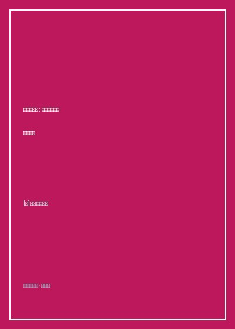

《分类的艺术》

总体观点
《分类的艺术：动物学家如何认识世界》（The Variety of Life: A Survey of the World's Living Organisms）是当代世界科普文学与理论生物学界最博大精深、最引人入胜的博物学皇皇巨著。英国伦敦大学三一学院客座研究员、著名演化生物学家科林·塔奇（Colin Tudge）在本书中向人类智力最古老也最崇高的冲动致敬——“为地球上的全部生命命名与归类”。没有分类，浩瀚纷繁的生命世界便只是一堆毫无秩序的杂乱泥浆；唯有通过严谨的分类学坐标系，三十八亿年来生命演化的宏伟脉络方能在我们眼前灿烂铺展。
全书以极其清晰生动的史诗画卷，回溯了人类认识自然范式的三次伟大跃迁：从亚里士多德基于直觉形态的朴素分类，到卡尔·林奈确立“界门纲目科属种”七级阶元与拉丁文双名法的古典革命；再到达尔文演化论诞生后、现代由威利·亨尼希奠定的“分支系统学（Cladistics）”与DNA分子生物学革命。塔奇以极其通俗的语言解开了无数令外行大惑不解的生物学公案——为什么在现代演化树中“传统意义上的鱼类并不存在”？为什么鸟类本质上就是一群幸存至今且披着羽毛的兽脚类恐龙？为什么鲸鱼与河马是彼此最亲近的表亲？
在全书的后半部，作者如同一位博学慈祥的向导，带领读者沿途攀爬这棵遮天蔽日的“生命大树（The Tree of Life）”——从太古宙深海热泉火山口的原核单细胞古菌，到真核多细胞生物的寒武纪生命大爆发；从苔藓地衣登上荒凉陆地，到节肢动物、被子植物与哺乳动物的交织繁盛。这不仅是一本献给所有自然爱好者与科学探求者的生命百科全书，更是一部以宏大时间尺度唤醒人类对地球生物多样性无上敬畏与生态保护责任的深情宣言。
核心观点
-
1. 分类即认知：人类大脑借由命名与分类赋予混乱宇宙以秩序
分类不仅是贴标签的机械工作，它是科学探索的底层操作系统。通过寻找形态背后的共性与分化节点，人类才得以在生物多样性的迷宫中建立理性的知识大厦。
林奈在十八世纪创立双名法（属名 + 种加词），用统一的拉丁语消解了欧洲各国数百种自相矛盾的地方俗名，使全球科学家首次拥有了通用的自然语法。 -
2. 分支系统学的革命：唯有共同祖先的单系群才具有演化真实性
现代分类学坚决抛弃了基于表面相似特征（如都会飞或都生活在水里）的人工分类。一个合格的分类阶元必须包含一个共同祖先及其所有的后代分支（单系群）。
传统的“爬行动物纲”是一个残缺的并系群，因为如果把蜥蜴和鳄鱼放在一起，却将从爬行动物直接演化出来的鸟类踢除出去，在演化树上在逻辑上无法自圆其说。 -
3. 鱼类并不存在：传统分类常识在严谨分支演化树面前的破灭
人类与硬骨鱼的亲缘关系，远远近于硬骨鱼与软骨鲨鱼的亲缘关系。在严格的支序演化树上，陆生四足动物（包括人类）在本质上不过是一群爬上陆地的肉鳍鱼后裔。
腔棘鱼和肺鱼体内支撑鱼鳍的骨骼排列与人类手臂骨骼（肱骨、桡骨、尺骨）高度同源，比它与一条普通草鱼的解剖学同源性更为紧密一致。 -
4. 分子钟与DNA破壁：基因测序彻底颠覆传统外表形态假说
趋同进化往往让毫无血缘的物种长出极其相似的外表以适应相同环境。唯有线粒体DNA与细胞色素c的突变累积速率（分子钟），才能揭穿表象揭示真实的演化家谱。
外表庞大如鱼类的鲸鱼和海豚，在DNA测序下赫然被证实与陆地上体态笨重的河马亲缘关系最近，促使生物学家将鲸目并入偶蹄目创立了“鲸偶蹄目”。 -
5. 每一个生命都是三十八亿年幸存奇迹：敬畏生命大树的每一个枝丫
地球上现存的无论是微小的土壤真菌、热带雨林的兰花还是深海乌贼，它们的祖先与人类同样成功熬过了五次地球大灭绝灾难。消灭任何一个物种都是撕毁一页永恒史诗。
渡渡鸟和旅鸽的彻底灭绝，意味着数千万年漫长基因演化的独特分支在宇宙中永远被斩断，人类作为树冠上的一个嫩芽对守护整棵大树负有神圣不可推卸的责任。
全书思维导图 · 知识脉络树
全书结构
-
第一部分 为什么我们要给生命分类？（分类学思想革命史）
回顾从亚里士多德自然梯级论、林奈创造论分类、达尔文生命大树隐喻，直到亨尼希的分支系统学与分子系统发育学革命全历程。
详述林奈当年如何根据植物雄蕊和雌蕊的数目对植物进行人为分纲，引发保守宗教卫道士斥责其为“不道德的色情分类法”。 -
第二部分 树干的基部：原核生物与真核生命的破晓起源
深入太古宙深海地质，探讨生命起源假说，剖析古菌域、细菌域与真核生物域三域学说的确立，以及线粒体起源的内共生学说奇迹。
解密一个好氧细菌如何被远古厌氧单细胞生物吞噬却没有被消化，最终演化为所有动植物细胞体内制造能量的发电厂——线粒体。 -
第三部分 绿色王国与真菌世界（陆地生态系统的拓荒者）
描绘藻类向苔藓、蕨类、裸子植物与被子植物的波澜壮阔演化大迁移，剖析真菌菌丝网络如何作为地下互联网支撑整座森林的养分循环。
展示被子植物如何与昆虫展开长达一亿年的协同进化：花朵进化出精准契合蜜蜂喙部的形状与紫外线引导斑块，催生全球生态大繁荣。 -
第四部分 动物世界的宏伟繁衍（从刺胞动物到哺乳类大家族）
全书篇幅最宏大的核心主体，遍历无脊椎动物三十余门，详尽梳理脊索动物、鱼类、两栖类、羊膜卵演化、恐龙盛衰与哺乳动物大辐射。
以图解追踪早期颌骨如何从无颌鱼类的腮弓软骨逐步演变为爬行动物的下颌骨，并最终神奇地微缩转移为哺乳动物中耳内传递声音的听小骨。 -
第五部分 人类的家谱与生命大树的守护宣言
在灵长目支系中准确定位智人的微小坐标，反思第六次生物大灭绝危机，呼吁全人类摆脱人类中心主义狂妄，担负起守护生命大树的伦理天职。
作者站在演化树的末端俯瞰星空感慨：“我们不是被单独创造的泥土奇迹，我们是一条流淌了三十八亿年、由无数生命先辈鲜血汇聚而成的长河。”